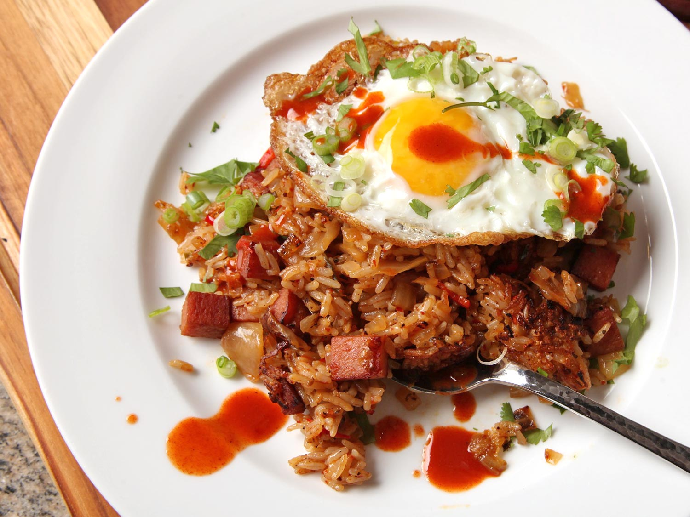

- Yield: Serves 2 to 3
- DIFFICULTY: Easy
- TOTAL TIME: 15 minutes
Kimchi fried rice is quick and easy way to make delicious food without spending a ton of money on ingredients. It's
a Korean staple, and kept me fed throughout college! The ingredients are cheap, and the process is incredibly
simple. All you need is some kimchi, spam, day-old rice, and whatever vegetables you have left over in your fridge.
Fry 'em up, and you're ready to serve. The following recipe is from J.
Kenji Lopez-Alt's recipe on Serious Eats.
Tools Needed
- Bowls of various sizes
- Fine-mesh strainer
- A wok if you have a gas stove, a frying pan if you don't
- A medium to large sized knife
- A spatula or large spoon to toss the ingredients together
Ingredients
- 2 cups cooked white rice, preferably a day old.
- 3/4 pound kimchi with juices (~1 cup, packed)
- 2 tablespoons (30ml) vegetable or canola oil, divided
- 1 can of Spam, cut into 1/4- to 1/2-inch dice
- 1 large onion, finely diced (1 1/2 cups)
Optional
- 4 scallions, white and pale green parts only, thinly sliced (~1/4 cup)
- 2 medium cloves garlic, minced
- 1 hot red or green chili (i.e. jalapeno, serrano, Thai bird), stemmed and thinly
sliced
- Freshly ground black pepper
- 2 teaspoons Asian fish sauce
- 1 teaspoon toasted sesame oil
- 1/cup chopped fresh cilantro leaves and fine stems
- Kosher salt
- Fried eggs, for serving
- Hot sauce, for serving
Instructions
- Transfer rice to a medium bowl and use your hands to break up rice into individual grains.
Place kimchi in a fine-mesh strainer set over a large bowl and squeeze out excess liquid.
Reserve liquid and finely chop kimchi.
- Heat 1/2 tablespoon oil in a wok over medium-high heat until shimmering. Add spam and cook,
tossing and stirring frequently, until well-browned and starting to crisp. Add chopped kichi and
onion and cook, stirring and tossing regularly, until vegetables are softened, about 4 minutes.
Transfer to a bowl and set aside.
- Add another 1/2 tablespoon oil to wok. Increase heat to high and heat until smoking. Add
half of rice and cook, stirring and tossing, until rice is pale brown, toasted, and has a
slightly chewy texture (~3 minutes). Transfer to a separate bowl and repeat this step with the
remaining rice.
- Return all rice to the wok and press it up the sides to leave a space in the middle. Add
another 1/2 tablespoon oil to the middle. If you have scallions, garlic, and/or chili, add them
now. Otherwise, add the onion, kimchi, and Spam mixture to the rice and toss to combine. Pour in
reserved kimchi juice and add your preferred seasonings. Add fish sauce, sesame oil, and
cilantro if you have them. Season to taste with salt if necessary. When ready to serve, let the
rice sit in the wok undisturbed for ~45 seconds - 1 minute, depending on your stove, to create a
crisp crust underneath. Turn rice out onto a serving platter. Top with fried eggs if you have
them, and serve immediately with hot sauce.
Final Thoughts
The best part about kimchi fried rice is how versatile it is. I always made mine with just rice, spam,
kimchi, and onion because it was so much easier. But you can do so much with it. Add peas and carrots, or swap
out spam with chicken or shrimp. This dish is as simple or complicated as you make it. Whether you want a
gourmet dinner or a quick midnight snack, kimchi fried rice can do it all!